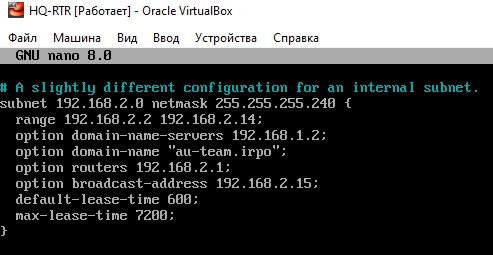
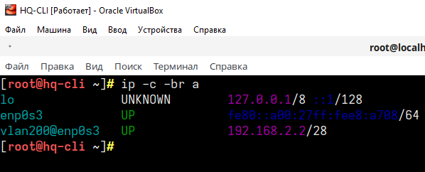

¶ Задание
¶ 9. Настройте протокол динамической конфигурации хостов для сети в сторону HQ-CLI:
- Настройте нужную подсеть
- В качестве сервера DHCP выступает маршрутизатор HQ-RTR
- Клиентом является машина HQ-CLI
- Исключите из выдачи адрес маршрутизатора
- Адрес шлюза по умолчанию – адрес маршрутизатора HQ-RTR
- Адрес DNS-сервера для машины HQ-CLI – адрес сервера HQ-SRV
- DNS-суффикс – au-team.irpo
- Сведения о настройке протокола занесите в отчёт.
¶ Реализация
¶ 9.1 Установка и настройка DHCP сервера на HQ-RTR
Устанавливаем необходимые пакеты
Настройки для диапазона адресов IPv4 производятся в файле
/etc/dhcp/dhcpd.conf. Примеры конфигурации можно посмотреть в файле/usr/share/doc/dhcp-server/dhcpd.conf.example.
Для облегчения создания конфигурационного файла для DHCPv4 копируем файл
/usr/share/doc/dhcp-server/dhcpd.conf.exampleв директорию/etc/dhcp/с именемdhcpd.conf
Открываем файл конфигурации
Находим блок # A slightly different configuration for an internal subnet. Его правим, а все остальное удаляем.
Приводим его к следующему виду или прописываем строки вручную, используя адресацию VLAN200
где:
subnet - обозначает сеть, в области которой будет работать данная группа настроек;
range — диапазон, из которого будут браться IP-адреса;
option domain-name-servers — через запятую перечисляем DNS-сервера.
option domain-name — суффикс доменного имени
option routers — шлюз по умолчанию;
default-lease-time, max-lease-time — время и максимальное время в секундах, на которое клиент получит адрес, по его истечению будет выполнено продление срока.

Запускаем и добавляем в автозагрузку службу dhcpd:
¶ 9.2 Проверка работы DHCP сервера
Перезагружаем интерфейс на HQ-CLI и убеждаемся в работоспособности DHCP сервера
